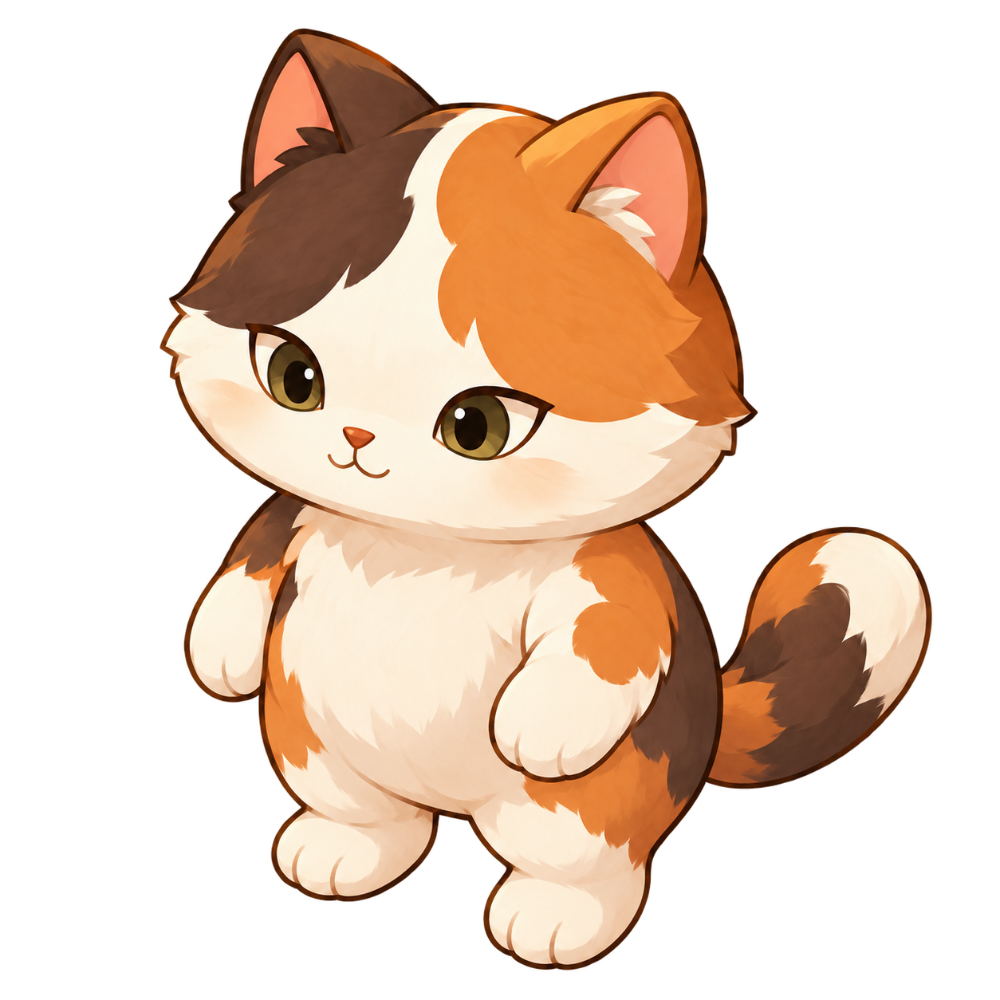
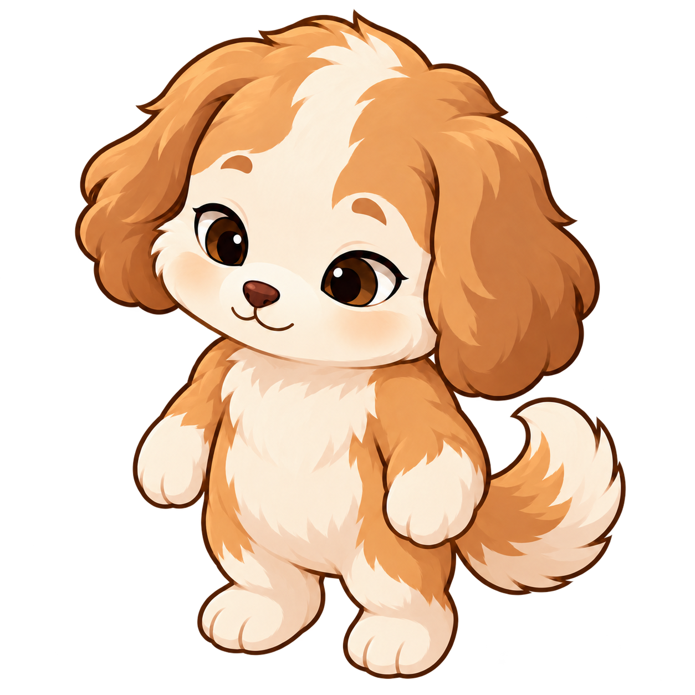
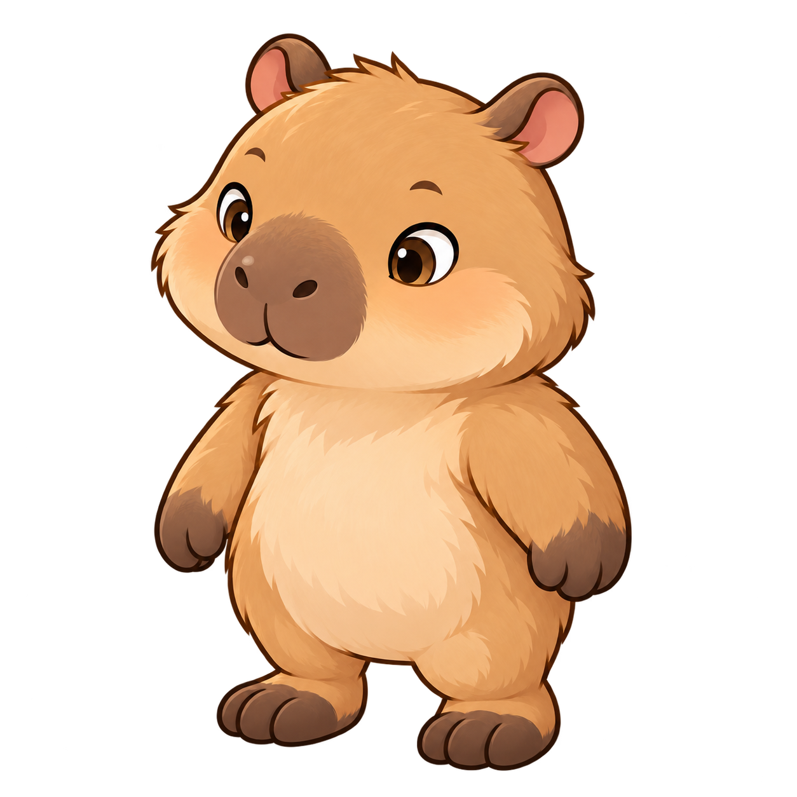
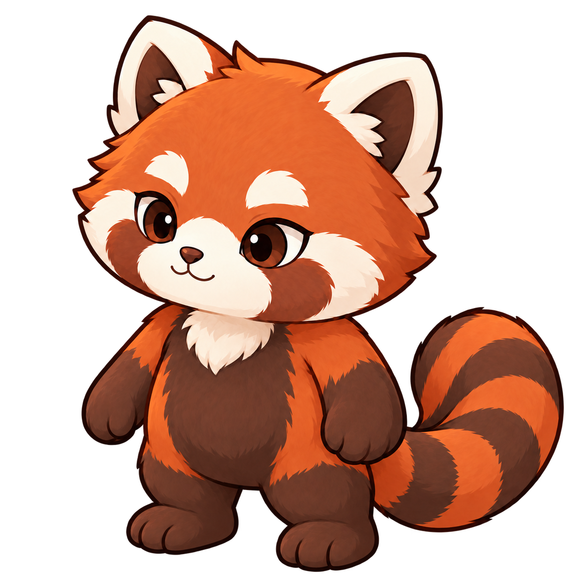

← 마을로 돌아가기
책 읽기
산책하기
리그 JSON 받기 ↗
책을 내려놓고, 잠깐 바람 쐬기
산책하는 모모
앞·뒤 원화 · 20관절
캐릭터 선택
같은 친구의 새로운 발걸음.
함께 걸을 친구
모모
강아지
카피바라
레서판다

모모
20관절 리깅

강아지
20관절 리깅

카피바라
18관절 리깅

레서판다
20관절 리깅
왼발
오른발
가벼운 발걸음으로 걸어요
발 디딤 → 무게 이동 → 다음 걸음
관절 보기
Ⅱ
한 걸음 주기
0%
이동 속도
느긋하게
보통
사뿐사뿐
01
산책하기
양발 · 팔 · 몸통 · 꼬리
02
잠깐 멈추기
발을 내려놓고 편안하게